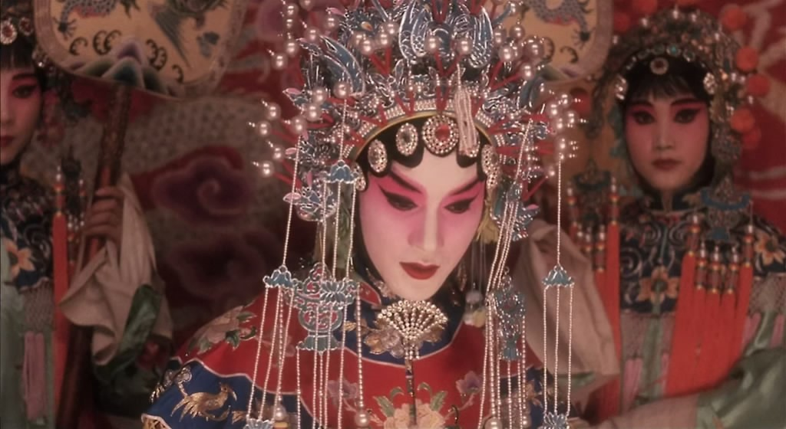

霸王别姬
梅兰芳 《霸王别姬》 选段：《劝君王饮酒听虞歌（虞姬）》
-
劝君王饮酒听虞歌，
解君忧闷舞婆娑。
嬴秦无道把江山破，
英雄四路起干戈。
自古常言不欺我，
成败兴亡一刹那。
宽心饮酒宝帐坐，
待见军情报如何？

剧目赏析
《霸王别姬》一剧中虞姬本为花衫，而唱念取法于青衣，唱腔设计优美，重要唱段载歌载舞。其中有一段风格别致的“剑舞”，是梅兰芳以京剧舞蹈为基础，吸收武术动作而编创，是全剧中最精彩的一折。梅的舞剑，既不是狂舞，也不是卖弄功夫，而是在疾缓相间的【夜深沉】曲牌的伴奏下翩翩起舞，姿态柔中有刚，情调悲中有烈，颇具有观赏性和感染力。剧中“看大王在帐中和衣睡稳”一段段，情景交融，悲凉动听，为梅派经典唱腔。
《霸王别姬》中的剑舞是柔美的虞姬与豪气盖世的霸王生离死别时的舞蹈，因此，虞姬是通过舞剑来安慰已经四面楚歌、大势已去的项羽，既有劝其振奋精神寻得机会东山再起，又有诀别之意，这种内心的不舍与惋惜，使得这段舞剑的戏剧内容十分复杂，既要体现出虞姬丰富的内心世界，又要展示其凄婉妩媚的娴熟技艺。